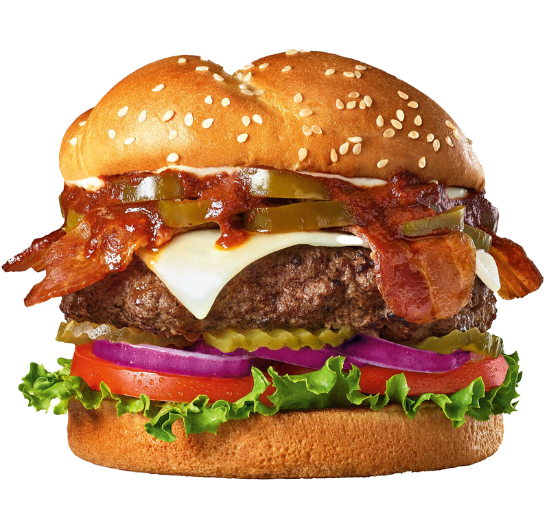

Our Philosophy: Great Ingredients, Great Burgers
Bob’s Burgers is great gourmet burgers, steaks, salads and so much more. When you join us at Bob’s, you get a wonderful dining experience with fast friendly service, a warm welcoming atmosphere and food so good the flavor explodes in your mouth. We use only the finest ingredients, prepared fresh when you order pickles, tomato, red onions and lettuce on a sesame seed bun.
Location & Hours
711 Boylston St.
Boston, MA 02116
617-535-5000
Open 7 days
11am - 8pm
Complaint or compliment?
We’d love to hear it.
Get in touch!